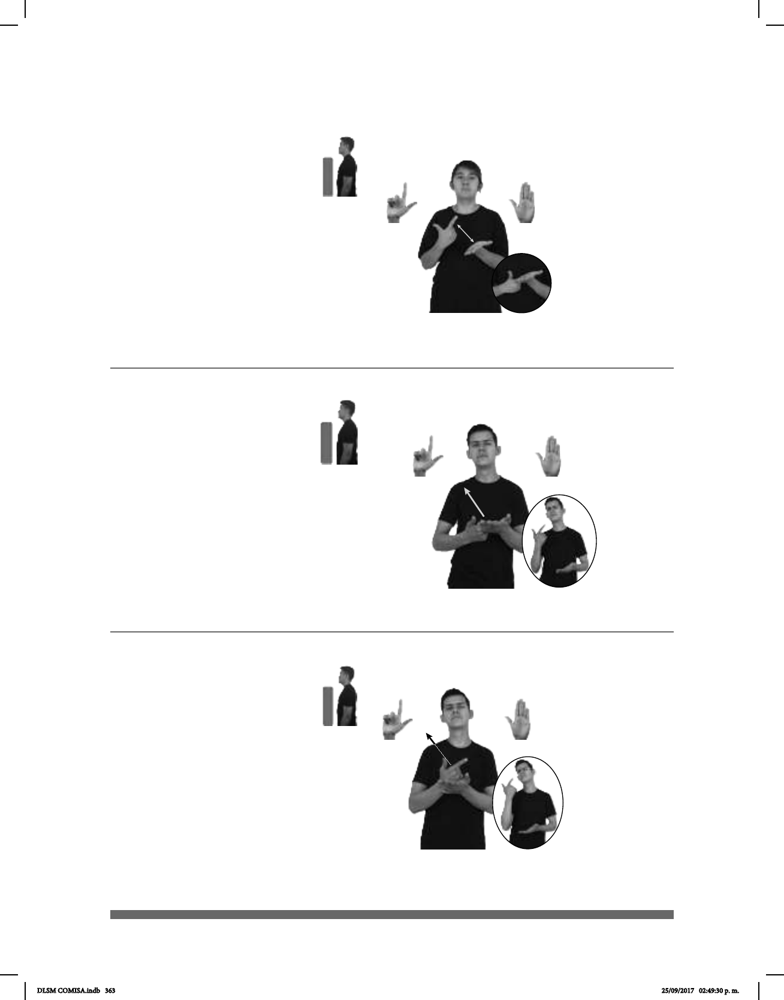

363
(L-69)
Seña: SB
MD L.1, MB B-P.2
MD palma hacia adentro.
MB palma hacia arriba.
MD y MB a la altura del
pecho.
El índice de la MD
golpea la MB en línea recta
repetidamente.
sust. f. Sustancia orgánica
de origen mineral, vegetal o animal que
está formada por la combinación de
glicerina con ciertos ácidos orgánicos;
en los animales y vegetales tiene la
función de reserva alimenticia.
Seña: SB
MD L.1, MB B-P.2
MD palma hacia adentro.
MB palma hacia arriba.
La MD inicia sobre MB y
termina a la altura del cuello. MB la
altura del pecho.
MD recto.
Cabeza ladeada
hacia la derecha, ojos semicerrados,
boca abierta y mostrando los dientes.
adj. Que es serio,
corresponde a las posibles
consecuencias perjudiciales de cierta
acción.
Seña: SB
MD L.1, MB B-P.2
MD palma hacia adentro.
MB palma hacia arriba.
La MD inicia sobre MB y
termina a la altura del cuello. MB a la
altura del pecho.
MD recto.
Cabeza ladeada
hacia la derecha, ojos semicerrados, boca
abierta y mostrando los dientes.
adj. Que es extremadamente
malo, peligroso, dañino, o perjudicial.
(L-68)
(L-67)
COMIDA TENER MUCHO GRASA
La comida tiene mucha grasa.
__muy
pro-ÉL GRAVE
Él está muy grave.
pos-MI AMIGO GRAVE DENTRO HOSPITAL
Mi amigo está grave en el hospital.
DLSM COMISA.indb 363 25/09/2017 02:49:30 p. m.